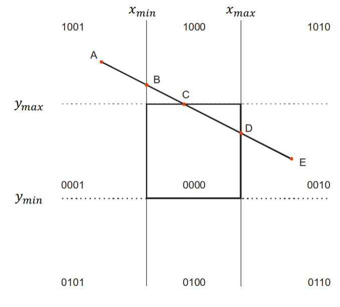
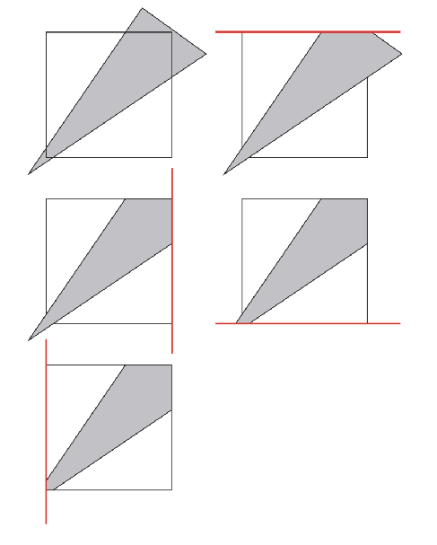
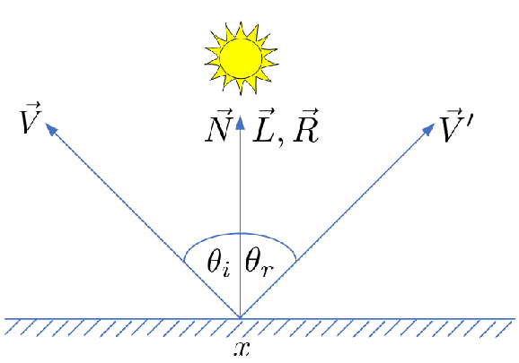

Grafika komputerowa
Czym jest grafika komputerowa
- Tworzenie, przechowywanie, rendering i manipulacje modelami i
obrazami
- cyfrowa synteza i manipulacja treści wizualnych
Podział grafiki komputerowej
- Dane
- 2D
- operacje na płaskich obiektach
- 3D
- obiekt na którym dokonywane są operacje umieszczony jest w przestrzeni 3D
- zamiana 3D na 2D
- Przetwarzanie obrazów
- operacje na gotowym obrazie
- filtrowanie itd.
- 2D
- Technika
- Wektorowa
- obraz rysowany z wykorzystaniem łuków i odcinków
- skalowalność
- mniejsze pliki
- złożoność pamięciowa
- Rastrowa
- obraz składa się z siatki pikseli
- więcej możliwości edycji
- bogactwo barw
- utrata jakości przy skalowaniu
- Wektorowa
- Czas
- Interaktywna
- programy aktualizują na bieżąco obraz w zależności od działań użytkownika
- granica ok. 30 fps
- Nieinteraktywna
- program wczytuje dane i na ich podstawie generuje ostateczny obraz
- więcej czasu na wygenerowanie lepszego efektu
- np. na potrzeby filmów
- Interaktywna
Modelowanie krzywych
- Linie łamane
- sekwencja wierzchołków połączonych prostymi liniami
- przydatne ale nie dla gładkich krzywych
- Spline
- typ gładkich krzywych 2D/3D
- zastosowania
- ilustracje 2D
- fonty
- modelowanie 3D
- animacja
- konstrukcja
- interpolacja
- aproksymacja
Definicja krzywych
- Sposób jawny
- \(y = f(x)\)
- generowanie punktów przez podstawianie konkretnych wartości
- brak możliwości generacji punktów o tej samej współrzędnej \(x\)
- Sposób niejawny
- \(f(x,y) = 0\)
- sprawdzanie czy punkt należy do krzywej
- trudność konstruowania punktów
- Sposób parametryczny
- \(x = f(t)\)
- \(y = g(t)\)
- podstawianie kolejnych wartości \(t\) generuje kolejne punkty krzywej
Splines
- Użytkownik definiuje punkty kontrolne
- Punkty są interpolowane w celu utworzenia gładkiej krzywej
- Krzywa jest całkowicie zdeterminowana przez punkty kontrolne
- Zalety
- prosta definicja (kilka punktów kontrolnych)
- mało danych do przechowania
- parametryczna krzywa - parametr \(t\)
- wiele wielomianów niskiego stopnia
Interpolacja i aproksymacja
- Interpolacja
- krzywa przechodzi przez punkty kontrolne
- krzywa interpolacyjna
- może być niestabilna (np. pętle)
- Aproksymacja
- punkty służą do określenia kształtu krzywej ale nie musi przez nie przechodzić
- krzywa aproksymacyjna
- wygodna w użyciu
Krzywe Beziera
- Użytkownik definiuje 4 punkty
- Krzywa przechodzi przez początek i koniec
- Aproksymuje pozostałe 2
- Krzywa wielomianowa 3 stopnia
- Opisywana równaniem parametrycznym (forma macierzowa)
- Styczna do odcinków
- \(P_0P_1\) w punkcie \(P_0\)
- \(P_2P_3\) w punkcie \(P_3\)
- Nie wychodzi poza otoczkę wypukłą stworzoną z jej punktów kontrolnych
- Gładkie połączenia łuków
- współliniowe punkty kontrolne
- Dzielenie krzywych Beziera
- algorytm de Casteljau - znajduje punkt określony parametrem \(u\)
- podziel odcinki łączące punkty kontrolne w proporcjach \(u : 1-u\)
- połącz wyznaczone punkty odcinkami
- podziel nowe odcinki w proporcjach \(u : 1-u\)
- połącz wyznaczone punkty odcinkami
- podziel nowy odcinek w proporcjach \(u : 1-u\)
- weź wyznaczony punkt
- algorytm de Casteljau - znajduje punkt określony parametrem \(u\)
Reprezetnacje 3D
- Surowe dane
- chmury punktów
- obrazy głębi / dystansu
- woksele
- Powierzchnie
- siatki trójkątów
- parametryczne
- Bryły
- CSG
- Graf sceny
Dobra reprezentacja 3D
- Intuicyjna
- Gwarancja ciągłości
- Gwarancja poprawności
- Wydajny rendering
- Wydajne operacje boolowskie
- Dokładne
- Zwięzłe
- Posiadające strukturę
Chmury punktów
- Nieustrukturyzowany zbiór punktów w przestrzeni
- Źródło danych
- skanery 3D
- fotogrametria
- algorytmy wizji komputerowej
- Wykorzystanie
- tworzenie modeli CAD
- kontrola jakości
- wizualizacja
- Zalety
- reprezentacja obiektów z wykorzystaniem skończonej liczby punktów
- szybkie tworzenie modeli (z odpowiednim sprzętem)
- Wady
- brakuje precyzji modeli powierzchniowych
- brak możliwości reprezentacji idealnych krzywych
- konieczność rekonstrukcji powierzchni w celu renderingu
Obrazy głębi
- Punkty 3D przeniesione na płaszczyznę obrazu odległość od pewnego punktu (zwykle sensora)
- Źródła danych
- kamery time-of-flight
- triangulacja stereo
- skanery światła strukturalnego
Woksele
- Jednorodna siatka wolumetrycznych próbek
- Woksel - najmniejszy element przestrzeni 3D
- Reprezetnacja obiektów bez jawnej powierzchni (chmury, ogień)
- Zawiera informacje na temat wnętrza obiektu
- Źródła danych
- tomografy
- Wykorzystanie
- obrazowanie medyczne
- symulacje oświetlenia
- modelowanie obiektów
- Zalety
- dobre modelowanie przestrzeni 3D
- możliwości symulacji niemożliwych dla innych reprezentacji (światło w chmurach)
- prosta i najszybsza metoda wizualizacji danych wolumentrycznych (obrazy medyczne)
- Wady
- trudno stworzyć model bez odpowiedniego sprzętu
- brak precyzji modeli powierzchniowych
- kosztowny rendering (dostosowany do poligonów, a nie wokseli)
Siatki wielokątów
- Zwykle zbudowane z trójkątów
- Trójkąt reprezentowany przez 3 wierzchołki
- Tylko powierzchnia obiektu
- Reprezentacja przez paski trójkątów
- kolejny trójkąt dodaje tylko 1 wierzchołek
- definicja przez uporządkowaną listę wierzchołków
- Reprezentacja mesh
- Realistyczne cieniowanie
- Wspierane przez sprzęt
- Wachlarz
- wierzchołek centralny, dzielony przez wszystkie trójkąty
- definicja przez uporządkowaną listę wierzchołków
- Zalety
- prosta reprezentacja
- wsparcie sprzętowe
- modelowanie wspierane przez oprogramowanie (np. Blender)
- Wady
- gładka powierzchnia wymaga dużej liczby trójkątów
- brak informacji o zawartości obiektu (wnętrzu)
Tworzenie powierzchni
- Wykorzystanie krzywych
- otwarta krzywa obracana wokół osi
- zamknięta krzywa przesuwana wzdłuż ścieżki
- bryły obrotowe
- Reprezentacja parametryczna
- część obiektów da się określić równaniami (prymitywy)
- idealna reprezentacja obiektów
CSG
- Constructive Solid Geometry
- Kombinacje objętości nachodących na siebie obiektów 3D z
wykorzystaniem operacji na zbiorach
- unia
- przecięcie
- różnica
- Przydatne do modelowania
- nie trzeba modyfikować siatki
- Mogą powstawać błędy, które trzeba naprawiać ręcznie
Fraktale
- Obiekty samopodobne we wszystkich rozdzielczościach
- Generowane przez rekursywne aplikowanie tej samej transformacji
- Wykorzystywane do generacji
- drzew
- płatków śniegu
Graf sceny
- Wysokopoziomowa struktura opisu zależności obiektów między sobą
- ułatwia nakładanie transformacji (przesuwanie jednocześnie ramienia i dłoni)
- Połączenie obiektów w liściach
- Wydajny rendering
- Umożliwia wyłączenie widoczności wybranych fragmentów
- wygodne do pracy przy modelowaniu
Przekształcenia
- Obiekty znajdują się w przestrzeni i w niej przemieszczają
- Wszystkie operacje opisywane macierzami 4x4
- Reprezentacja punktu w przestrzeni \((x,y,z)\)
- określony początek układu współrzędnych
Wektory
- 3 składowe
- Reprezentacja
- ruchu
- siły
- przemieszczenia
- Operacje
- dodawanie
- odejmowanie
- skalowanie
- normalizacja
- iloczyn skalarny
- iloczyn wektorowy
- Wektor normalny
- prostopadły do powierzchni
- długość 1
- wyznaczany np. przez iloczyn wektorowy 2 wektorów stycznych do powierzchni
- reprezentuje orientacje
System współrzędnych
- Określa początek przestrzeni
- Dostarcza 3 niezależne liniowo wektory
- osie x,y,z
- Lęwoskrętny lub prawoskrętny (ręczność)
- może wymagać przekształcenia obiektu przy importowaniu
Przestrzeń świata
- Podstawowy system współrzędnych
- Początek w punkcie \((0,0,0)\)
- Wektory
- \((1,0,0)\)
- \((0,1,0)\)
- \((0,0,1)\)
- Wszystko inne definiowane w relacji do tego systemu
Transformacje
- Mapowanie punktów na inne punkty i wektorów na inne wektory
- Liniowe
- \(T(sv) = sT(v)\)
- \(T(v_1 + v_2) = T(v_1) + T(v_2)\)
- Ciągłe
- sąsiedztwo \(v\) jest przekształcane na sąsiedztwo \(T(v)\)
- Jeden do jednego i odwracalne
- \(v = T^{-1}(v)\)
Transformacje afiniczne
- Zawierają wszystkie transformacje liniowe oraz translację
- Identyczność
- Translacja
- Rotacja
- Skalowanie
- Pochylenie
Współrzędne jednorodne
- Reprezentacja n-wymiarowej przestrzeni rzutowej za pomocą układu n+1 współrzędnych
- \((x,y,z,w) = (x/w,y/w,z/w)\)
- Upraszcza przekształcenia, bo inaczej translację trzeba by traktować odrębnie
- Macierze przekształceń 4x4
Identyczność
Przekształcenie dające ten sam obiekt
\[ I = \begin{bmatrix} 1 & 0 & 0 & 0 \\ 0 & 1 & 0 & 0 \\ 0 & 0 & 1 & 0 \\ 0 & 0 & 0 & 1 \\ \end{bmatrix} \]
Skalowanie
- Proporcjonalna zmiana długości elementu w przestrzeni liniowej
- Jeśli obiekt nie zaczyna się w początku układu współrzędnych to się przesunie
- Nie zachowuje kątów między płaszczyznami jeśli skalowanie nie jest
jednorodne
- \(S_x \ne S_y \vee S_x \ne S_z\)
\[ S(x,y,z) = \begin{bmatrix} S_x & 0 & 0 & 0 \\ 0 & S_y & 0 & 0 \\ 0 & 0 & S_z & 0 \\ 0 & 0 & 0 & 1 \\ \end{bmatrix} \] \[ Sv = \begin{bmatrix} S_x & 0 & 0 & 0 \\ 0 & S_y & 0 & 0 \\ 0 & 0 & S_z & 0 \\ 0 & 0 & 0 & 1 \\ \end{bmatrix} \begin{bmatrix} x \\ y \\ z \\ 1 \\ \end{bmatrix} = \begin{bmatrix} S_xx \\ S_yy \\ S_zz \\ 1 \end{bmatrix} \]
\[ S_{2D}(x,y) = \begin{bmatrix} S_x & 0 & 0 \\ 0 & S_y & 0 \\ 0 & 0 & 1 \\ \end{bmatrix} \]
Rotacja
- Każda rotacja może być przedstawiona jako kompozycja 3 rotacji
nałożonych przeciwnie do ruchu wskazówek zegara
- kąty Eulera
- Macierze dla osi \(x\), \(y\), \(z\), kompozycja daje finalną macierz rotacji
- Zachowuje kąty między częściami obiektu
- Macierze reprezentują obrót wokół początku układu współrzędnych
- dla inaczej położonych obiektów przesuną środek
\[ R_x(\theta) = \begin{bmatrix} 1 & 0 & 0 & 0 \\ 0 & \cos \theta & -\sin \theta & 0 \\ 0 & \sin \theta & \cos \theta & 0 \\ 0 & 0 & 0 & 1 \\ \end{bmatrix} \] \[ R_y(\theta) = \begin{bmatrix} \cos \theta & 0 & \sin \theta & 0 \\ 0 & 1 & 0 & 0 \\ -\sin \theta & 0 & \cos \theta & 0 \\ 0 & 0 & 0 & 1 \\ \end{bmatrix} \]
\[ R_z(\theta) = \begin{bmatrix} \cos \theta & -\sin \theta & 0 & 0 \\ \sin \theta & \cos \theta & 0 & 0 \\ 0 & 0 & 1 & 0 \\ 0 & 0 & 0 & 1 \\ \end{bmatrix} \]
\[ R_{2D}(\theta) = \begin{bmatrix} \cos \theta & -\sin \theta & 0 \\ \sin \theta & \cos \theta & 0 \\ 0 & 0 & 1 \\ \end{bmatrix} \]
Pochylenie / ścinanie
- Shear
- Powoduje skośny kształt obiektów w którymś z wymiarów
\[ Sh = \begin{bmatrix} 1 & sh_x^y & sh_x^z & 0 \\ sh_y^x & 1 & sh_y^z & 0 \\ sh_z^x & sh_z^y & 1 & 0 \\ 0 & 0 & 0 & 1 \\ \end{bmatrix} \]
\[ Sh_{2D} = \begin{bmatrix} 1 & sh_x^y & 0 \\ sh_y^x & 1 & 0 \\ 0 & 0 & 1 \\ \end{bmatrix} \]
Translacja
Przesunięcie danego punktu o zadany wektor
\[ T(x, y, z) = \begin{bmatrix} 1 & 0 & 0 & x \\ 0 & 1 & 0 & y \\ 0 & 0 & 1 & z \\ 0 & 0 & 0 & 1 \\ \end{bmatrix} \]
\[ T_{2D}(x, y) = \begin{bmatrix} 1 & 0 & x \\ 0 & 1 & y \\ 0 & 0 & 1 \\ \end{bmatrix} \]
Składanie przekształceń
- Mając bazowe przekształcenia można konstruować bardziej złożone
- Dla wydajności lepiej utworzyć pojedynczą macierz przekstałcenia
- Mnożenie macierzy
- przekształcenia aplikowane od prawej do lewej
- kolejność ma znaczenie - mnożenie macierzy nie jest przemienne
Rysowanie odcinka
- Jak narysować odcinek na ekranie mając dany początek \((x_s, y_s)\) i koniec \((x_f, y_f)\)
- założenie \(x_s < x_f\)
- Zamalowanie pikseli, które są najbliżej prostej o równaniu
- \((y_s - y_f)x + (x_f - x_s)y + x_sy_f - x_fy_s = 0\)
- \(x_s \le x \le x_f\)
- \(y_s \le y \le y_f\)
- Oznaczenia
- \(y = mx + C\)
- \(m = \frac{dy}{dx}\)
- \(C = -\frac{d}{dx}\)
- \(dx = x_f - x_s\)
- \(d = x_sy_f - x_fy_s\)
Algorytm naiwny
- Obliczanie kolejnych wartości \(y\) dla zadanego \(x\)
- Korzysta ze wzoru na prostą
- Wady
- niepotrzebne operacje na liczbach zmiennopozycyjnych - mnożenie w pętli
- problem z zaokrągleniem
void naive_plot(int xS, int yS, int xF, int yF) {
int dx = xF - xS;
int dy = yF - yS;
int d = xS * yF - yF * yS;
float m = dy / dx;
float C = - d / dx;
for(int x = xS; x <= xF; ++x) {
float y = m * x + C;
put_pixel(x, round(y));
}
}Algorytm DDA
- Digital Differential Analyzer
- Ograniczenie kosztu operacji zmiennoprzecinkowych
- \(x\) przyjmuje tylko wartości
całkowite, różni się o 1 w kolejnych krokach
- \(y_i = mx_i + C\)
- \(y_{i+1} = m(x_i + 1) + C = mx_i + m + C = y_i + m\)
- Pomija wyraz \(C\)
- Nie korzysta ze wzoru na prostą
- Nie ma mnożenia w pętli
- Błąd się akumuluje
- problem tylko dla bardzo długich odcinków
void dda_plot(int xS, int yS, int xF, int yF) {
int dx = xF - xS;
int dy = yF - yS;
float m = dy / dx;
float y = yS;
for (int x = xS; x <= xF; ++x) {
put_pixel(x, round(y));
y += m;
}
}Algorytm Bresenhama
- Bez operacji na liczbach zmiennopozycyjnych
- Korzysta z własności wzoru na prostą
- \(L(x,y) = dy \cdot x - dx \cdot y - d\)
- punkt powyżej prostej - wartość ujemna
- punkt poniżej prostej - wartość dodatnia
- Jeśli wyznaczony piksel ma współrzędne \((x_i,y_i)\)
- następny ma \((x_{i+1}, y_i)\) albo \((x_{i+1}, y_{i+1})\)
- zależy jaki znak ma funkcja dla \((x_{i+1}, y_i + 0.5)\)
- Początkowa wartość funkcji decyzyjnej \(d
= dy - \frac{dx}{2}\)
- ważny jest tylko znak więc można wziąć \(d = 2dy - dx\)
void bresenham(int xS, int yS, int xF, int yF) {
int dx = xF - xS;
int dy = yF - yS;
int straight = 2 * dy;
int slant = 2 * (dy - dx);
int d = 2 * dy - dx;
for (int x = xS; x <= xF; ++x) {
put_pixel(x, y);
if (d < 0) {
d += straight;
} else {
d += slant;
++y;
}
}
}Wypełnianie wielokątów
Nie operaujemy na samych krawędziach, dążymy do wypełnienia kształtów
Algorytm skanowania linii
- Posiadamy wierzchołki wielokąta
- Wykorzystuje linie poziome
- Idąc od lewej do prawej malowane są tylko te piksele linii, które
należą do wielokąta
- szukamy przecięć z krawędziami wielokąta
- Działanie
- znajdź minimum i maksimum \(y\)
- dla każdej wartości między \(y_{max}\) a \(y_{min}\)
- wypuść linię poziomą
- znajdź przecięcia linii z wielokątem
- posortuj punkty przecięć według osi \(x\)
- wypełnij odcinki między punktami przecięć
Algorytm flood fill
- Wypełnianie zamkniętych obszarów
- Wejście algorytmu
- początkowa pozycja
- kolor do zamiany
- nowy kolor
- Działanie
- zaczynając od piksela startowego
- wstaw piksel do kolejki
- jeśli kolor piksela to kolor wybrany do zastąpienia
- zamień kolor na nowy
- dodaj sąsiadów piksela do kolejki
- powtarzaj dopóki kolejka nie jest pusta
- Sąsiedztwo
- 4-sąsiedztwo (4-way connectivity)
- 8-sąsiedztwo (8-way connectivity)
Obcinanie
- Analityczne obliczanie części prymitywów, które znajdują się w danym widoku
- Sens obcinania
- kiedy obiekty wystają poza okno wyświetlania
- nie ma sensu ich wyświetlać (resteryzować) jeśli nie będą widoczne
- przetwarzanie pikseli poza oknem to strata czasu
Algorytm naiwny
- Dla każdej linii
- sprawdź przecięcia z krawędziami widocznego obrazu
- wybierz najbliższy punkt jeśli istnieje
- jeśli cokolwiek zostało - narysuj
- Poprawne ale niewydajne
Optymalizacje
- Sprawdzenie obu końców odcinka
- jeśli oba leżą poza oknem - odrzucić
Algorytm Cohena-Sutherlanda
- Prostokąt obcinający definiowany przez 4 wartości
- Podział obszaru na 9 regionów
- przedłużenie boków prostokąta
- każdy region ma przypisany 4-bitowy kod
- środek \(0000\)
- bit 0 ma wartość 1 jeśli \(x < x_{min}\)
- bit 1 ma wartość 1 jeśli \(x > x_{max}\)
- bit 2 ma wartość 1 jeśli \(y < y_{min}\)
- bit 3 ma wartość 1 jeśli \(y > y_{max}\)
- Kody są wykorzystywane do szybkiego akceptowania/odrzucania odcinków
- jeśli suma logiczna końców odcinków jest 0 - akceptacja (jest w środku)
- jeśli iloczyn kodów końców odcinka jest inny niż 0 - odrzucenie (w całości poza prostokątem)
- W pozostałych przypadkach
- wybór końca odcinka poza prostokątem
- wyznaczenie punktu przecięcia odcinka z bokiem prostokąta
- wybór w zależności od kodu (np. przecięcie z \(x_{min}\) dla bitu 0)
- jeśli więcej bitów == 1 - wybór dowolny, ale zawsze w takiej samej kolejności
- przycięcie odcinka do punktu na prostej
- sprawdzenie końców odcinka
- powtarzaj dopóki nie da się stwierdzić czy odrzucić czy zaakceptować

Obcinanie wielokątów
- Zadanie jest dużo bardziej skomplikowane
- wejściem jest wielokat
- wyjściem jest wielokąt albo nic
- Wynikiem przycinania trójkąta może być
- trójkąt
- czworokąt
- pięciokąt
- sześciokąt
- Problem jest jeszcze bardziej skomplikowany dla wklęsłych wielokątów
- może być więcej niż 1 zwracanych wielokątów
Algorytm Sutherlanda-Hodgmana
- Algorytm służy do obcinania wielokąta z wykorzystaniem wielokąta wypukłego (najczęściej prostokąta)
- Idea
- wyznacz krawędzie wielokąta obcinającego
- dla każdej krawędzi
- znajdź część wspólną każdej krawędzi z obcinanym wielokątem
- obetnij wielokąt z wykorzystaniem tej krawędzi
- po przejściu wszystkich krawędzi wielokąt jest w pełni obcięty
- Wejście - lista wierzchołków w określonej kolejności
- Wyjście - lista wierzchołków obciętego wielokątu
- Algorytm
- weź krawędź figury obcinającej - skonstruuj prostą na jej podstawie
- obetnij dany wielokąt z wykorzystaniem krawędzi
- powtórz dla każdej krawędzi figury obcinającej
- Do rozpatrzenia w przypadku przecięć
- cała krawędź w obszarze widocznym - zapamiętanie wierzchołka końca
- krawędź opuszcza obszar widoczny - zapamiętanie wierzchołka przecięcia
- krawędź całkowicie niewidoczna - nic nie zapamiętywać
- krawędź wchodzi w obszar widoczny - zapamiętanie punktu przecięcia i wierzchołka
- Rozszerzalny do przestrzeni 3D

Potok graficzny
- Potok renderujący
- generacja/rendering obrazów 2D
- kamery
- obiekty
- źródła światła
- materiały
- tekstury
- itd.
- generacja/rendering obrazów 2D
- Położenie i kształt obiektów
- geometria (liczba trójkątów)
- środowiska
- kamery
- ortogonalna
- perspektywiczna
- Wygląd obiektów
- materiały
- źródła światła
- tekstury
- modele cieniowania
Architektura
- Etapy
- aplikacja
- przetwarzanie geometrii
- rasteryzacja
- przetwarzanie pikseli
- Najwolniejszy element ogranicza szybkość całości
- Szybkość wyrażana w fps - liczba obrazów wyrenderowanych w czasie sekundy
- Część z elementów może być przetwarzana równolegle
Aplikacja
- Pełna kontrola nad przebiegiem sterowania
- zwykle wykorzystuje CPU
- możliwość wykorzystania GPU - compute shader (do innych celów niż rendering)
- Ustawienia lub algorytmy w celu np. redukcji liczby trójkątów
- Główne zadanie
- przesłanie prymitywów do renderingu do etapu przetwarzania geometrii
- linie, punkty, trójkąty
- Przetwarzanie równoległe tam gdzie się da
- Algorytmy których nie da się zaimplementować w innych krokach
- np. fizyka, wykrywanie kolizji
- Obsługa wejść od użytkownika
- wpływa na przetwarzanie dalszych informacji
Przetwarzanie geometrii
- Operacje na trójkątach i wierzchołkach
- Etapy
- cieniowanie wierzchołków
- projekcja
- obcinanie
- mapowanie na ekran
Cieniowanie wierzchołków
- Zadania
- obliczanie położenia wierzchołka
- obliczanie dodatkowych danych dla wierzchołka
- wektory normalne, współrzędne tekstur, itd.
- Dawniej obliczano w tym kroku też cieniowanie
- obecnie raczej obliczane per pixel
- Obecnie raczej przetwarza się dane związane z wierzchołkiem
- np. wagi dla wierzchołków w animacji szkieletowej
- Vertex shader
- Wyjściem jest obowiązkowo pozycja wierzchołka
- Dokonywana jest seria przekształceń
- przestrzeń modelu -> przestrzeń świata
- przestrzeń świata -> przestrzeń widoku
Przestrzeń modelu
- Każdy model istnieje w swoim własnym układzie współrzędnych
- Model może mieć swoje przekształcenie (transformacja modelu)
- Wiele instancji jednego modelu ma własne, oddzielne przekstzałcenia
- znajdują się w różnych miejscach
- mają tę samą geometrię
- Po aplikacji transformacji, model znajdzie się w przestrzeni świata
Przestrzeń kamery/widoku
- Interesują nas tylko obiekty, które są widoczne na kamerze
- Zadanie - przekształcenie widoku
- umieszczenie kamery w centrum świata
- spojrzenie w kierunku \(\pm z\)
Projekcja
- Przekształcenie bryły widoku na kostkę
- ekstrema \((-1,-1,-1)\) i \((1,1,1)\)
- Określona macierzowo
- Typy
- ortogonalna
- perspektywiczna
Kamera ortogonalna
- Orthographic camera model
- Obiekty nie zmniejszają się wraz z odległością
- Linie równoległe w scenie pozostają równoległe
- Zachowuje względne odległości między obiektami
- Definiowana przez 6 krawędzi prostopadłościanu widzenia
Kamera perspektywiczna
- Perspective camera
- Obiekty znajdujące się daleko są rzutowane jako mniejsze
- Nie zachowuje odległości ani kątów
- Linie równoległe przestają być równoległe
- Definiowana dodatkowo wartość pola widzenia
- obszar widziany przez nieporuszające się oko
- skalowanie wartości z płaszczyzny projekcji na koordynaty \([-1, 1]\) na płaszczyźnie widoku
Obcinanie
- Odrzucanie prymitywów poza sześcianem jednostkowym
- Sprowadzenie do współrzędnych znormalizowanych
- między \((-1,-1,-1)\) i \((1,1,1)\)
Mapowanie do przestrzeni ekranu
- Przejście z trójwymiarowych współrzędnych na dwuwymiarowe
- Mapowanie na współrzędne ekranu
- Mapowanie wartości głębi do wartości z przedziału \([z_1, z_2]\) (domyślnie \([0,1]\))
- Współrzędne okna są przekazywane do etapu rasteryzacji
Rasteryzacja
- Znalezienie wszystkich pikseli, które należą do prymitywów, które są renderowane
- Etapy
- ustawienie trójkątów (składanie prymitywów)
- przejście przez trójkąty
Ustawienie trójkątów
- Obliczanie pochodnych, równań itd. dla każdego prymitywu
- Może być wykorzystane do interpolacji cieniowania
- Wykonywane przez sprzęt - bez możliwości modyfikacji
Przechodzenie trójkątów
- Generacja fragmentów
- dla każdego piksela, którego środek jest pokryty przez trójkąt
- Fragment posiada informacje
- głębia
- inne informacje pochodzące z etapu przetwarzania geometrii
- Właściwości fragmentu
- generacja z wykorzystaniem interpolowanych danych z trókąta
Przetwarzanie pikseli
- Dokonywanie obliczeń i przekształceń dla piksela/próbki która jest wewnątrz prymitywu
- Etapy
- cieniowanie pikseli
- łączenie
Cieniowanie pikseli
- Obliczenia cieniowania dla każdego piksela
- Wykorzystuje interpolowane informacje z poprzednich etapów
- Całkowicie programowalne
- Różne operacje do wykonania
- teksturowanie (współrzędne UV)
- obliczenia oświetlenia
- dodatkowe efekty
- Rezultat
- ostateczny kolor piksela
Łączenie
- Potok operacji rastrowych (ROP - raster operations pipeline)
- Brak możliwości programowania
- Duże możliwości konfiguracji
- Zadanie
- połączenie koloru etapu cieniowania z tym, który już jest w buforze
- stwierdzenie widoczności
Potok operacji rastrowych
- Bufory
- koloru
- głębi
- kanału alfa
- szablonowy (stencil buffer)
- ramki (framebuffer)
- zawiera wszystkie pozostałe bufory
- całość informacji o ramce
Bufor szablonowy
- Zapamiętuje lokalizacje renderowanych prymitywów
- Rendering do bufora może być wykonany z wykorzystaniem różnych
funkcji
- np. porównanie - piksel wyświetlony jeśli relacja prawdziwa
- Umożliwia generacje różnych obiektów
- np. przezroczystość
Rezultaty
- Po przejściu przez cały potok prymitywy, które przeszły wszystkie testy są wyświetlane na ekranie
- Podwójne buforowanie
- użytkownik nie powinien widzieć ramki w trakcie jej wyliczania
- rendering dzieje się w tle (back buffer)
- po obliczeniu jest podmieniany z zawartością ekranu (fron buffer)
Programowanie potoku renderingu
Vertex Shader
- Przekształcenia dla każdego wierzchołka
- Głównie przekształcenie do współrzędnych ekranu
- Minimalne wyjście - pozycja wierzchołka
- Zastosowania
- animacja obiektów
- generacja cząsteczek
- zniekształcenia soczewki
#version 330
in vec2 in_position;
void main() {
gl_Position = vec4(in_position, 0.0, 1.0);
}Tesselation shader
- Umożliwia generację krzywych powierzchni
- Hull shader
- specjalne prymitywy zaweirające definicje krzywych powierzchni, podziału powierzchni
- liczba i konfiguracja trójkątów generowanych przez tessellator
- przetwarzanie wszystkich punktów kontrolnych
- Tessellator
- generacja nowych wierzchołków
- możliwość generacji różnych powierzchni (trójkąty, izolinie)
- Domain shader
- obliczenie wszystkich wartości dla każdego wierzchołka po generacji
Geometry shader
- Dodatkowe przetwarzanie geometrii
- np. tworzenie dodatkowych prymitywów
- Przekształcenie jednych prymitywów w inne (trójkątów na linie)
- Może generować 0 lub więcej wierzchołków
- Zastosowania
- tworzenie kaskadowych map cieni
- tworzenie różnej wielkości cząstek
- wyciąganie kłębów futra z sylwetki
#version 330 core
layout (triangles) in;
layout (line_strip, max_vertices=3) out;
void main() {
gl_Position = gl_in[0].gl_Position;
EmitVertex();
gl_Position = gl_in[1].gl_Position;
EmitVertex();
gl_Position = gl_in[2].gl_Position;
EmitVertex();
EmitPrimitive();
}Fragment shader
- Fragment - część trójkąta pokrywająca część lub cały piksel
- Ostateczna definicja koloru
- Odrzucanie wartości
#version 330
out vec4 f_color;
void main() {
f_color = vec4(1.0, 0.0, 0.0, 1.0);
}Usuwanie powierzchni niewidocznych
Przesłanianie obiektów
- Wpływa na sposób odbioru sceny przez oglądającego
- Trzeba wyznaczyć obiekty, które leżą najbliżej rzutni i wyświetlać tylko te obiekty
- Do wyznaczania widoczności fragmentów można wykorzystać
- obiekty
- ściany
- krawędzie
- powierzchnie
- głębokość
- itd.
Algorytm malarski
- Ustalenie kolejności obiektów do wyświetlenia
- Obiekty posortowane według głębi
- Najpierw rysowane obiekty, które są dalej od kamery
- Nadpisuje się piksele zasłanianego obiektu
- Algorytm
- posortuj wielokąty według głębi od najdalszego do najbliższego
- rozwiąż niejasności w sortowaniu głębi
- narysuj wielokątu od najdalszego do najbliższego
- Zalety
- prosty
- Wady
- sortowanie wielokątów
- konieczność podziału wielokątów przy niejasnościach
Przesłanianie wielokątów
- Wykonuje się serie testów żeby rozwiązać niejasności
- kończy się sprawdzanie tak szybko jak to możliwe (po pierwszym spełnionym teście)
- Sprawdzenie rzutów na płaszczyznę xy
- czy nachodzą na siebie w x
- czy nachodzą na siebie w y
- jeśli nie - kończymy test i rysujemy wielokąt
- jeśli tak - kontynuujemy testowanie
- Sprawdzenie czy wielokąt jest po jednej stronie innego wielokąta
- wykorzystanie równania płaszczyzny
- sprawdzenie każdego wierzchołka z równaniem odpowiedniej płaszczyzny
- sprawdzenie dla wielokąta z mniejszą głębią
- wartość równania > 0
- wielokąt bliżej oglądającego
- sprawdzenie dla wielokąta z większą głębią
- wartość równania < 0
- wielokąt całkowicie przesłonięty
- wykorzystanie równania płaszczyzny
- Jeśli wielokąty na siebie nie nachodzą, kolejność rysowania nie ma znaczenia
- Jeśli nachodzą
- podział wielokątów
- obcinanie z wykorzystaniem płaszczyzn innych wielokątów
Z-bufor
- Rozstrzygnięcie o widoczności odkładamy do momentu tworzenia obrazu
rastrowego
- działanie w przestrzeni obrazu
- Zapamiętuje się dla każdego obiektu jego współrzędną \(z\)
- Dla każdego piksela obiektu oblicza się wartość głębi
- Na końcu rozpatruje się \(z\) dla każdego piksela
- Wielokąty przeglądane wierszami
- Można uprościć obliczanie \(z\) dla płaskich wielokątów
- Jeśli wielokąt nie jest płaski albo płaszczyzna nie jest określona
to można interpolować
- współrzędne wierzchołków wielokąta wzdłuż par krawędzi
- następnie interpolacja wzdłuż przeglądanego wiersza
- Pojawiają się problemy kiedy wielokąty są w podobnej odległości od
kamery
- wynika z podobnej głębi w z-buforze
- jest deterministyczne (te same rezultaty dla tej samej pozycji kamery)
- Rozwiązania
- zwiększenie precyzji
- odsunięcie od siebie wielokątów wcześniej
- przetwarzanie w post-transformacji w przestrzeni ekranu
- dodanie offsetu do \(z\) jednego z wielokątów
- Zalety
- wspomagany sprzętowo
- szybki
- działa dla każdego rodzaju prymitywów
- Wady
- większa zajętość pamięci
- aliasing
- kompresja głębi - dwa dalekie punkty mogą być zmapowane do tej samej wartości z
for px in pixels:
zbuffer[px.x][px.y] = far
color[px.x][px.y] = background_color
for p in polygons:
for f in p.fragments:
if f.z < zbuffer[f.x][f.y]:
zbuffer[f.x][f.y] = f.z
color[f.x][f.y] = f.colorTechniki usuwania powierzchni niewidocznych
- Nie wszystkie powierzchnie dokładają coś do ostatecznego obrazu
- Główne techniki
- odrzucanie tylnych ścian
- odrzucanie obiektów znajdujących się poza bryłą widzenia
- odrzucanie obiektów przesłanianych
Odrzucanie tylnych ścian
- Backface culling
- Usunięcie wielokątów skierowanych w odwrotną stronę niż obserwator
- Obliczenie iloczynu skalarnego wektora normalnego powierzchni i
wektora do środka rzutowania (do pozycji obserwatora)
- ujemny wynik - wielokąt skierowany do tyłu
Cieniowanie powierzchni
- Barwa widziana przez obserwatora zależy od
- położenia
- orientacji
- właściwości powierzchni
- światła
- Podstawowe modele to kompromis między prostotą obliczeń a złożonym zachowaniem światła
Światło punktowe
- Położenie
- Intensywność
- W każdym kierunku świeci tak samo
- Pozwala generować cienie
Oświetlenie
- \(\vec{V}\) - wektor w kierunku obserwatora
- \(\vec{N}\) - wektor normalny
- \(\vec{L}\) - wektor w kierunku źródła światła
- \(\vec{R} = \vec{L} - 2\vec{N}(\vec{L} \cdot \vec{N})\) - promień odbity
- \(\theta_i\) - kąt padania
- \(\theta_r\) - kąt odbicia

Tłumienie światła
- Light attenuation
- Ile światła dotknie powierzchni
- \((\vec{L} \cdot \vec{N}) \Phi = \cos(\alpha) \Phi\)
Cosinusowe Prawo Lamberta
- Ilość światła docierająca do powierzchni zależy od cosinusa kąta pomiędzy kierunkiem światła a wektorem normalnym powierzchni
- \(I = I_0 k_d\cos \theta = I_0 k_d(\vec{N} \cdot \vec{L})\)
Materiał
- Opis wyglądu obiektu na scenie
- Do symulacji interakcji światła z obiektem
- Różne materiały odbijają światło w różnych kierunkach
- Różne materiały absorbują światło w różnym stopniu
- W uproszczeniu materiał to
- kolor powierzchni rozpraszającej
- kolor odbicia od powierzchni
Odbicia
- Lustrzane
- Połyskliwe
- Rozproszone
Otoczenie
- Ambient
- \(I = k_a I_a\)
- \(k_a\) - współczynnik otoczenia
- \(I_a\) - intensywność otoczenia sceny / źródła światła
Rozproszenie
- Diffuse
- \(I = k_d(\vec{L} \cdot \vec{N})
I_d\)
- \(k_d\) - współczynnik rozproszenia
- \(\vec{L}\) - wektor w kierunku źródła światła
- \(\vec{N}\) - wektor normalny
- \(I_d\) - intensywność światła dla rozproszenia
Odbicie
- Specular
- \(I = k_s(\vec{V} \cdot \vec{R})^n
I_s\)
- \(k_s\) - współczynnik odbicia
- \(\vec{V}\) - wektor w kierunku obserwatora
- \(\vec{R}\) - wektor światła odbitego
- \(n\) - współczynnik połyskliwości
- \(I_s\) - intensywność światła dla odbicia
Złożenie
Suma składowych otoczenia, rozproszenia i odbicia daje model oświetlenia Phonga
Cieniowanie płaskie
- Obserwowana barwa wyznaczana raz dla całego wielokąta
- Kolor obliczony dla punktu leżącego w środku wielokąta
- Wykorzystujemy wektory normalne dla wierzchołków
Cieniowanie Gourauda
- Barwa wyznaczana w każdym z wierzchołków wielokąta
- Wnętrze wypełnione interpolowanymi wartościami barw z wierzchołków
- Obliczenia w vertex shaderze
- obliczone wartości przekazywane do pixel shadera
- Pixel shader bierze interpolowaną wartość z vertex shadera i przepisuje ją na wyjście
- Dobre rezultaty dla matowych powierzchni
- Błędy przy powierzchniach połyskliwych - charakterystyczne krzyże
Cieniowanie Phonga
- Obliczenia barwy wykonuje się dla każego piksela
- Interpolowane wektory normalne i pozycje
- Vertex shader zapisuje wektory normalne i pozycje
- Pixel shader odczytuje interpolowane wartości i wykorzystuje do obliczeń
- Pozbawione błędów poprzednich 2
- Może być kosztowne (współcześnie bez znaczenia)
Interpolacja wektorów normalnych
- Wektory normalne są długości \(1\) w vertex shaderze
- Po interpolacji nie muszą być
- Należy je normalizować jeszcze raz w pixel shaderze
Implementacja
- Co można uprościć
- Jak często obliczać wartości (użycie cache)
- Czego wygląd użytkownik może zmieniać, a co można wypalić na teksturze